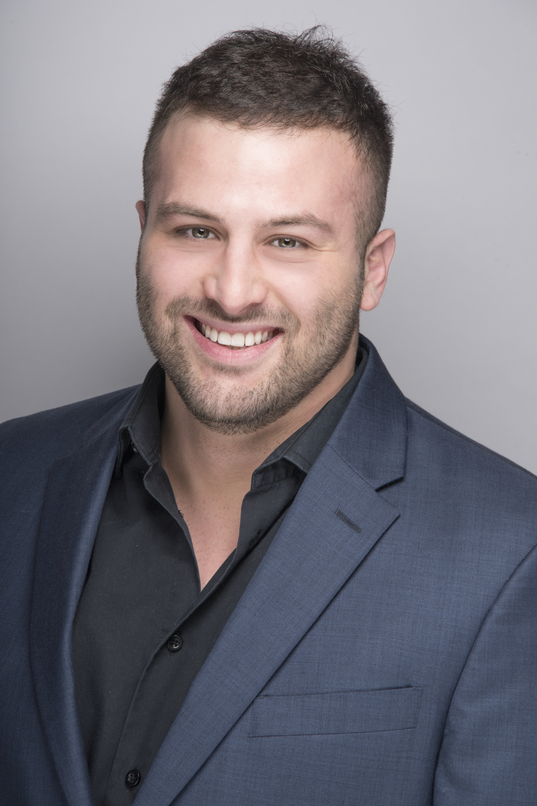

AI in Healthcare Rounds with Mason Kadem
Using AI in clinic and large-scale research · McMaster University Heersink School & DeGroote Hub

PhD Candidate in Computer Science, McMaster University · CIHR Doctoral Scholar
I am a CIHR PhD Scholar in Computer Science at McMaster University working with Rong Zheng in mechanistic interpretability, which studies what a trained network computes internally. My neuroscience and biomedical engineering training give me a useful lens here, because the same questions we ask about biological brains, like what each region computes and how signals flow between them, are now the questions we ask about transformers.
Alongside my PhD, I served as Head of AI at McMaster's Vascular AI for five years, leading machine learning projects on brain blood flow, and as Founder at Ro (Research Online), an incubated health technology startup for large-scale online physiological research supported by Hamilton's Innovation Factory and The Clinic at McMaster. From 2022 to 2025 I was Professor of Computer Science at Mohawk College and authored the textbook Pearls and Perils of Machine Learning. I have secured over $210,000 in research and business funding, including a $120,000 CIHR Doctoral Scholarship and a $90,000 MITACS Accelerate Entrepreneur grant, and was nominated for the Vanier Canada Graduate Scholarship.
Using AI in clinic and large-scale research · McMaster University Heersink School & DeGroote Hub

Enabling large-scale remote physiological research online with Ro · McMaster Innovation Hub
Host of McMaster University's Rethinking Mobility in Aging podcast series (Apple Podcasts), interviewing faculty and graduate researchers on aging, mobility, and human-centered technology.
I have taught and developed curriculum across computer science, digital health, and cybersecurity at Mohawk, McMaster, Western, Fanshawe, and the Vector Institute. My textbook Pearls and Perils of Machine Learning has been adopted in five courses I developed, including a current graduate course at McMaster, and was recognized on Mohawk College National Authors Day.